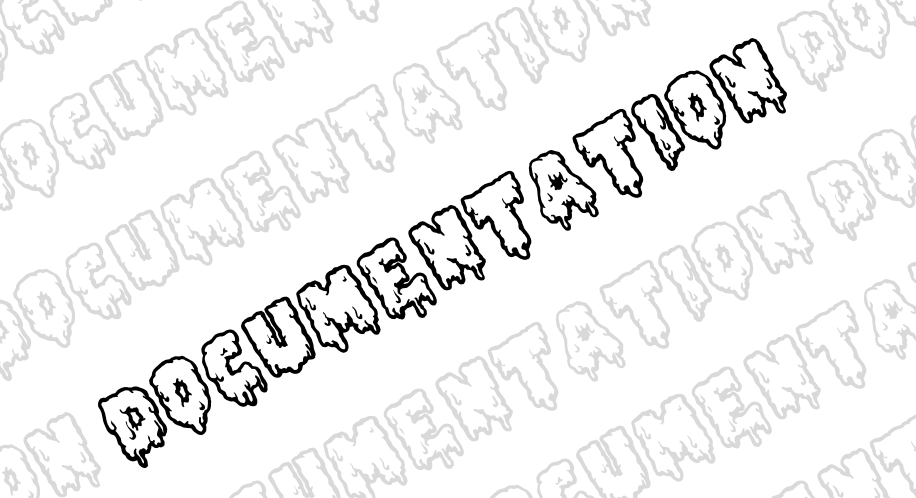
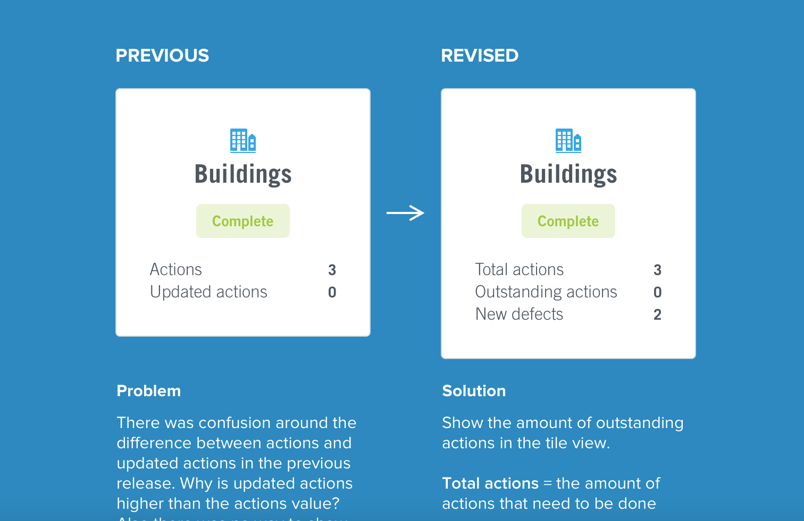
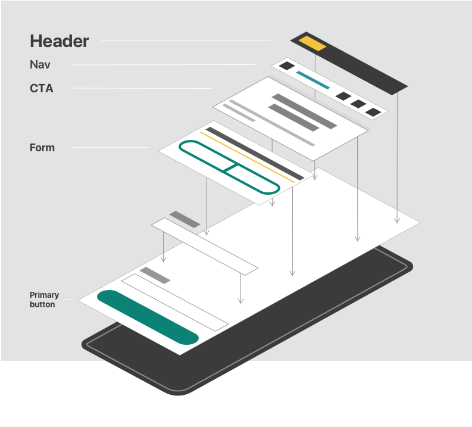

How do we continue to deliver quality in a post-Covid world?

Documentation isn’t easy, what you write needs to accurately communicate every decision and the reason behind it so that any other members of your team can jump in and pick up where you left off. This has become increasingly important as our team has become distributed (working from home) over level 3 and 4 lockdown. Management needed a way to ensure everyone is on the same page and not churning (I’ll admit I do this). Luckily, these processes are just good practice and had already been implemented before we went into lockdown.
DHR
The Design History Rationale (DHR) is a document that is used to keep track of a project’s progress and explain the design decisions that were made along the development process. Every time a new project is started there is a DHR document created.
When someone new comes onto a project a good starting point is to read through the DHR to get a background on the project. It includes a history of decisions, the project description, business intent and success metrics.
Much like Zeplin can serve as a source of truth for design, the DHR provides the reasoning and thinking behind decisions. This could be a technological constraint that affects a story in a sprint or a higher level strategic pivot. The important thing is that they are documented because every decision has flow on effects that affect future design outcomes. That is why we document these after every meeting for our future selves. When a client or a new team mate asks “why is there this unnecessary step in the flow?”, you can retrace back to a point in time in the DHR and say “because! There was a business constraint and we had to include it”. This can also help you reevaluate if that initial constraint still exists and whether it's worth going back and changing it.
Design for delivery
When we design for delivery, it is design’s responsibility to stay one sprint ahead of the developers and testers to ensure they have designs to follow. You need to work with the client to make sure designs are approved before a sprint begins as well as working in a supporting role to solve any issues developers have mid-build. You are constantly uploading user flows to Zeplin, updating symbol libraries and adding new sections to the style guide.
With so many moving parts a common understanding of the process and where documents are held is important. The design-for-delivery process we follow was created as a collaborative effort between design, development, test and project management to help anyone jump into a project and intuitively know where everything is located so you can pick up where your colleague was. This helps us to deliver things with both speed and quality.
Design Research board
I like to think of research as something that the whole team can take part in. Having designers and project managers contribute to and conduct research means, as an organisation, it is more valued because it results in better design outcomes. With so many people doing research on their individual projects there was a need for a directory of all things research.
We have created a Trello board to house this information. It has a range of templates, recommended tools for conducting research, how-to documents for running usability testing and previous research case studies. This serves as a handy tool for the whole team to reference when starting new projects and they want to see what has been done previously and what did and didn’t work.

To Sum it all up
Documentation is the glue that connects all processes together at Alphero. In a post-Covid world where working remotely is the new norm this has become even more apparent. It helps us to work seamlessly and make the hard look easy while still delivering high quality outcomes.